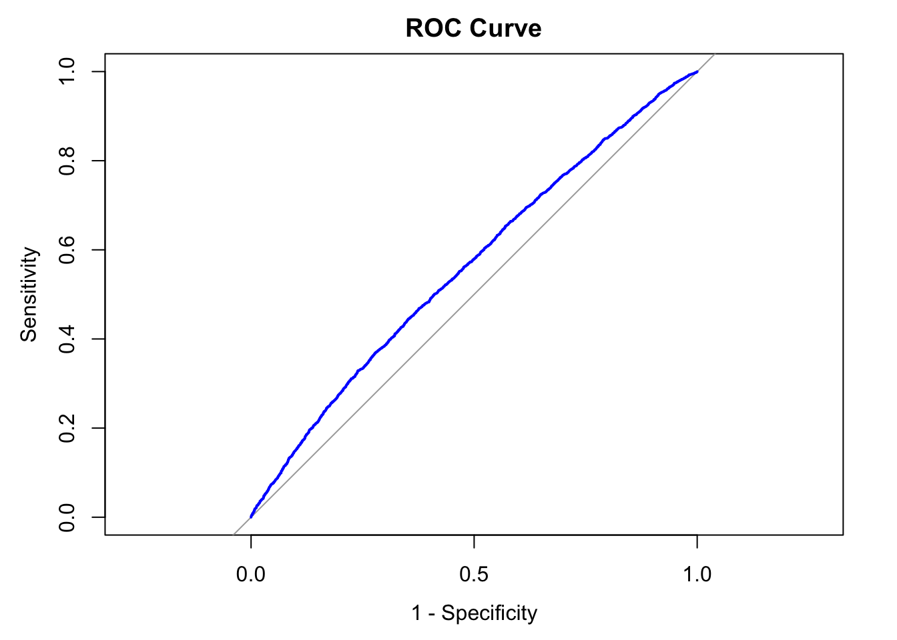

conda activate hpdm208z1 Introduction
In this workshop, you will learn how to construct and evaluate polygenic risk scores (PRS) as genetic predictors of human health. You will generate PRSs for coronary artery disease (CAD) and type 2 diabetes (T2D).
2 Aims of workshop
- enable you to generate a PRS
- compare frequency of cases and controls across quantiles for a PRS distribution
- assess the overall predictive accuracy of a PRS in determining disease status
- enable you to generate a PRS at different P-value thresholds
- compare ROC-AUCs to determine strongest PRS based on different P-value thresholds
- assess the overall predictive accuracy of the PRS in determining disease status in an independent study
3 Conda environment
Before attempting this workshop, you should activate the hpdm208z conda environment that will provide the R through Jupyter Lab and required library dependencies:
4 Workshop directory
All relevant files associated with this workshops can be found in the following directory:
/home/ubuntu/hpdm208z/workshops/prs/You should navigate to this directory prior to starting the workshop. Note, a jupyter notebook can be be loaded from this directory to assist you in undertaking this workshop:
prs.ipynb5 Workshop data
Below is a table describing the data files in the workshops directory:
| File Name | Description |
|---|---|
cad_phenotype.txt |
CAD case-control status on 9,766 individuals |
cad_snp_genotypes.txt |
Genotype data on 66 SNPs previously associated with CAD in 9,766 individuals |
cad_snp_weights.txt |
Allele effect estimates of 66 SNPs previously associated with CAD |
t2d_phenotype.txt |
T2D case-control status on 9,755 individuals |
t2d_snp_genotypes.txt |
Genotype data on 88 SNPs previously associated with T2D in 9,755 individuals |
t2d_snp_weights.txt |
Allele effect estimates of 88 SNPs previously associated with T2D |
CAD_GWAS.txt |
Published GWAS results for CAD (Nikpay et al. 2015, Nature Genetics) |
study1_snp_genotypes.txt |
Genotype data on 7,114 SNPs in 10,000 individuals |
study1_cad_status.txt |
CAD case-control status on 10,000 individuals |
study2_snp_genotypes.txt |
Genotype data on 7,114 SNPs in 9,766 individuals |
study2_cad_status.txt |
CAD case-control status on 9,766 individuals |
6 Generating a PRS for Coronary Artery Disease
Let’s first load in genotype data for 66 SNPs known to be associated with Coronary Artery Disease (CAD) in 9,000 individuals using the file cad_snp_genotypes.txt into a DF called cad_snp_genotypes:
# Read data in:
cad_snp_genotypes = read.table("cad_snp_genotypes.txt", header=T, stringsAsFactors=F)
# Preview first 10 rows and columns:
cad_snp_genotypes[1:10,1:10] Rsid Allele1 Allele2 P7212 P3362 P4481 P1345 P4276 P89 P4066
1 rs9970807 C T 1 1 1 0 0 0 0
2 rs7528419 A G 0 1 1 1 0 2 0
3 rs6689306 A G 2 1 0 0 2 1 1
4 rs1892094 C T 2 0 1 0 1 0 1
5 rs6700559 C T 0 0 2 2 2 0 1
6 rs2820315 C T 1 1 0 2 0 0 0
7 rs67180937 T G 0 2 1 2 2 2 2
8 rs16986953 G A 0 0 1 1 1 0 1
9 rs7568458 T A 1 0 1 1 0 2 1
10 rs17678683 T G 0 0 0 1 0 0 0Note that the rows refer to a specific variant, while the 3rd column onwards are specific to individuals. Each column associated with an individual contains numerical representations of genotypes for the SNPs associated with CAD: [0,1,2]. The numerical genotype codes refer to the number of copies of Allele2 carried by each individual.
Now we will load data on the SNPs associated with CAD-risk held in cad_snp_weights.txt into a DF called cad_snp_weights. This data includes
- the disease risk increasing allele (
Effect_Allelein this dataset) - the associated effect as ln(OR) per
Effect_Alleleallele carriedWeightin this dataset).
# Read data in:
cad_snp_weights = read.table("cad_snp_weights.txt", header=T, stringsAsFactors=F)
# Preview first 10 rows and columns:
head(cad_snp_weights) Rsid Risk_Allele Other_Allele Weight
1 rs2891168 G A 0.19062036
2 rs9349379 G A 0.13102826
3 rs55730499 T C 0.31481074
4 rs2315065 A C 0.28517894
5 rs7528419 A G 0.11332868
6 rs4468572 C T 0.07696104We can align the information about SNP effects with genotypes for those SNPs by merging the above DFs together. We will create a DF called cad_genetics that provides the merged data of CAD-SNP genotypes and weights.
# Read data in:
cad_genetics = merge(cad_snp_weights, cad_snp_genotypes, by="Rsid")
# Preview first 10 rows and columns:
cad_genetics[1:10,1:10] Rsid Risk_Allele Other_Allele Weight Allele1 Allele2 P7212 P3362 P4481 P1345
1 rs10139550 G C 0.05826891 C G 1 0 0 1
2 rs10237377 T G 0.05129329 G T 1 1 1 0
3 rs1050362 A C 0.03922071 C A 1 1 1 1
4 rs10840293 A G 0.05826891 G A 1 1 1 0
5 rs11057830 A G 0.06765865 G A 1 1 1 0
6 rs11065979 T C 0.06765865 C T 1 1 2 0
7 rs11191416 T G 0.07696104 T G 0 0 0 0
8 rs11556924 C T 0.07696104 C T 1 1 1 2
9 rs11617955 T A 0.08617770 T A 0 1 0 0
10 rs11838776 A G 0.06765865 G A 1 1 0 16.1 Aligning allele counts to disease-risk increasing alleles
When creating a PRS, we typically align genotypes to represent the number of risk increasing alleles carried (or number of trait raising alleles for continuous traits). However, the allele that represents the increasing genotype code for a given dataset is usually randomized to what may a disease-specific risk-increasing allele. In the DFs above, the risk allele is defined in the Risk_Allele column and the genotype codes are aligned to Allele2. So we need to align the genotype codes [0,1,2] to represent the number of disease-risk increasing alleles carried where required (i.e. Risk_Allele != Allele2) . We will later weight the aligned genotype codes by the effect (logOR) of the disease risk raising allele.
The following code will identify rows where Risk_Allele != Allele2 and process values in the 7th column to the last column to flip the genotype codes so that 0 -> 2 and 2 -> 0. Values of 1 can remain the same because they represent 1 copy of the Risk_Allele and 1 copy of the Other_Allele.
cad_genetics[cad_genetics$Risk_Allele != cad_genetics$Allele2, 7:ncol(cad_genetics)] =
2 - cad_genetics[cad_genetics$Risk_Allele != cad_genetics$Allele2, 7:ncol(cad_genetics)]
# Preview first 10 rows and columns:
cad_genetics[1:10,1:10] Rsid Risk_Allele Other_Allele Weight Allele1 Allele2 P7212 P3362 P4481 P1345
1 rs10139550 G C 0.05826891 C G 1 0 0 1
2 rs10237377 T G 0.05129329 G T 1 1 1 0
3 rs1050362 A C 0.03922071 C A 1 1 1 1
4 rs10840293 A G 0.05826891 G A 1 1 1 0
5 rs11057830 A G 0.06765865 G A 1 1 1 0
6 rs11065979 T C 0.06765865 C T 1 1 2 0
7 rs11191416 T G 0.07696104 T G 2 2 2 2
8 rs11556924 C T 0.07696104 C T 1 1 1 0
9 rs11617955 T A 0.08617770 T A 2 1 2 2
10 rs11838776 A G 0.06765865 G A 1 1 0 1By previewing the cad_genetics DF, we can see that the genotype codes remain the same for the first 6 SNPs but the 7th SNP rs11191416 has the respective genotypes flipped because the coding was not originally aligned to the disease risk increasing allele. This is also true for the next 3 SNPs in the data preview.
For are now going to create a copy of the cad_genetics DF and modify the aligned genotype codes to be weighted by the effect of each respective genetic variant. We will do this by multiplying the genotype code to the logOR held in the Weight column. We will first create a DF called cad_genetics_weighted:
# Copy DF containing genetic data related to CAD
cad_genetics_weighted = cad_genetics6.2 Weighting numbers of disease risk increasing allele by their effects
Now we will perform the multiplication of genotype values by the respecitive effect of the variant on CAD risk.
# Copy DF containing genetic data related to CAD
cad_genetics_weighted[7:ncol(cad_genetics_weighted)] = cad_genetics_weighted[,7:ncol(cad_genetics_weighted)] * cad_genetics_weighted$Weight
# Preview first 10 rows and columns:
cad_genetics_weighted[1:10,1:10] Rsid Risk_Allele Other_Allele Weight Allele1 Allele2 P7212 P3362 P4481 P1345
1 rs10139550 G C 0.05826891 C G 0.05826891 0.00000000 0.00000000 0.05826891
2 rs10237377 T G 0.05129329 G T 0.05129329 0.05129329 0.05129329 0.00000000
3 rs1050362 A C 0.03922071 C A 0.03922071 0.03922071 0.03922071 0.03922071
4 rs10840293 A G 0.05826891 G A 0.05826891 0.05826891 0.05826891 0.00000000
5 rs11057830 A G 0.06765865 G A 0.06765865 0.06765865 0.06765865 0.00000000
6 rs11065979 T C 0.06765865 C T 0.06765865 0.06765865 0.13531730 0.00000000
7 rs11191416 T G 0.07696104 T G 0.15392208 0.15392208 0.15392208 0.15392208
8 rs11556924 C T 0.07696104 C T 0.07696104 0.07696104 0.07696104 0.00000000
9 rs11617955 T A 0.08617770 T A 0.17235539 0.08617770 0.17235539 0.17235539
10 rs11838776 A G 0.06765865 G A 0.06765865 0.06765865 0.00000000 0.06765865Finally, we can create a DF that contains subjects IDs and their respective CAD PRS by summing up the weighted alleles for individual:
# Copy DF containing genetic data related to CAD
cad_prs = data.frame(
id = names(cad_genetics_weighted)[7:ncol(cad_genetics_weighted)],
prs = colSums(cad_genetics_weighted[7:ncol(cad_genetics_weighted)]),
row.names = NULL
)
# preview
head(cad_prs) id prs
1 P7212 4.381356
2 P3362 3.762699
3 P4481 4.345376
4 P1345 4.507998
5 P4276 4.503723
6 P89 3.776389At this point we have a PRS for each individual which provides a summary statistic of their overall genetic susceptibility for CAD. The value on its own is of little use and should be combined with other data in order to perform meaningful analyses. For example, we may want visualise the distribution of CAD PRS among cases and controls, know what the prevalence of CAD is among different quantiles of the PRS distribution, or get a sense of whether we could classify a patient who may have symptoms of CAD using the PRS without adding any additional information into the model through the use of ROC curves.
6.3 Comparing the distribution of CAD-PRS between cases and controls
We will now compare how the PRS values compare between cases and controls for CAD. Intuitively, we should expect CAD cases to have higher PRS values on average than CAD controls so let’s check. First we will load in the phenotype file containing case (1) and control (0) status.
# Load in the phenotype data into a DF
cad_pheno = read.table("cad_phenotype.txt", header=T, stringsAsFactors = F)
# Preview DF
head(cad_pheno) id cad_status
1 P1 0
2 P2 0
3 P3 0
4 P4 1
5 P5 0
6 P6 0Now we will merge the data held in the cad_prs DF.
# Load in the phenotype data into a DF
cad_pheno_and_prs = merge(cad_pheno, cad_prs, by="id")
# Preview DF
head(cad_pheno_and_prs) id cad_status prs
1 P1 0 4.008102
2 P10 0 4.096070
3 P100 1 5.123279
4 P1000 0 4.871205
5 P1001 0 4.163969
6 P1002 0 4.876188Let’s plot the distribution of the GRS in cases and controls, overlaying the two distributions into a single histogram with transparency (i.e. set alpha color to 0.5). Use 100 bins when plotting the data.
library(ggplot2)
ggplot(
cad_pheno_and_prs, aes(x=prs, fill = as.factor(cad_status))) +
geom_histogram(position = "identity", alpha = 0.5, bins = 30) +
theme_bw() +
labs(
x = "CAD PRS",
y = "N individuals",
fill = "Case / control status"
)
6.4 Questions
- What do you notice about the distribution of PRS values among cases compared to controls?
- Based on the histogram, do you think observed differences make the PRS a good diagnostic tool for the disease?
Return to the course page to post your thoughts
6.5 Comparing prevalence of cases across the CAD-PRS distribution
We will now compare the frequency of CAD cases among different quartiles of the CAD-PRS distribution.
# Get quintile vales from CAD PRS distribution:
quartiles <- quantile(cad_pheno_and_prs$prs, probs = seq(0, 1, 0.25))
# create a respective list of labels we can assign PRS values to
quartile_labels <- c("Q1", "Q2", "Q3", "Q4")
# create a new column in cad_pheno_and_prs DF which labels the quintile the PRS falls into
cad_pheno_and_prs$prs_quartile <- cut(
cad_pheno_and_prs$prs,
breaks = quartiles,
include.lowest = TRUE, # include the smallest value
labels = quartile_labels
)
# preview df
head(cad_pheno_and_prs) id cad_status prs prs_quartile
1 P1 0 4.008102 Q1
2 P10 0 4.096070 Q2
3 P100 1 5.123279 Q4
4 P1000 0 4.871205 Q4
5 P1001 0 4.163969 Q2
6 P1002 0 4.876188 Q4Now we have determined the quartiles the PRS values fall into, we can tabulate case control status
counts = table(cad_pheno_and_prs$prs_quartile, cad_pheno_and_prs$cad_status)
props = prop.table(counts, margin = 1)
# print counts of cases (1) and controls (0) per PRS quartile
print(counts)
0 1
Q1 1369 1073
Q2 1265 1176
Q3 1215 1226
Q4 1020 1422# print proportions of cases (1) and controls (0) per PRS quartile to 4dp
print(round(props, 4))
0 1
Q1 0.5606 0.4394
Q2 0.5182 0.4818
Q3 0.4977 0.5023
Q4 0.4177 0.5823Clearly the frequency of cases is increasing as we are moving up through the quartiles of the GRS. You may want to play around with the data and split the data into quintiles or deciles and compare what happens to the frequency of cases in those groups.
6.6 Assessing the overall predictive accuracy of the CAD-PRS
We may have a new patient with a condition that is undiagnosed but there may a chance they have CAD. We could try to predict their CAD status based on our PRS but to do that we will need to create a ROC curve and calculate the area under the curve (AUC) to determine how good a predictor it will be! We will use the pROC R library to do this.
suppressWarnings(suppressPackageStartupMessages(library(pROC)))
# create roc object we can use for funtions associated with pROC
roc_obj = roc(cad_pheno_and_prs$cad_status , cad_pheno_and_prs$prs)Setting levels: control = 0, case = 1Setting direction: controls < casesplot(roc_obj, col = "blue", lwd = 2, main = "ROC Curve", legacy.axes = TRUE)
# Calculate the area under the curve:
auc_value = auc(roc_obj)
print(auc_value)Area under the curve: 0.56266.7 Question
- Does the ROC-AUC suggest the PRS would be a good diagnostic tool for CAD in a clinical setting?
Return to the course page to post your thoughts
7 Task - Type 2 diabetes
- Repeat the steps above for type 2 diabetes and answer the same questions again. You will need the following files:
t2d_phenotype.txtt2d_snp_genotypes.txtt2d_snp_weights.txt
- Compare the ROC-AUC from the T2D PRS for type 2 diabetes with the ROC-AUC from the CAD PRS for coronary artery disease. Do you know notice any differences?
Return to the course page to post your thoughts
8 Incorporting more features (SNPs) into a PRS
So far, you have generated a PRS for coronary artery disease (CAD) and type 2 diabetes (T2D) using genetic variants discovered to be associated with these traits in independent studies at P<5x10-8. You checked for differences in prevalence across quartiles of the disease-specific PRS and examined the area under the ROC curve to assess overall predictive accuracy of a genetic predictor.
We will now do something similar except you will be incorporating more data from across the genome that may not have met our threshold of statistical significance. A research study aiming to identify associations will always have a limit in the magnitude of effect sizes it is able to detected at a given level of statistical significance due to its sample size. It’s possible that more genetic variation could be included in the predictor but the effects are too subtle to be detected by a study owing to it’s sample size. If a study had access to a larger sample size, it is possible that smaller effects could be detected. Recent work in the field has shown that by including more genetic variants into a genetic predictor has the ability to separate people out more across a PRS-distribution for a disease in terms of their risk of disease relative to others in a population (see Khera et al. 2018, Nature Genetics (available on ELE page)).
In this part of the workshop, you will
- explore what happens to predictive accuracy (ROC-AUC) when relaxing the P-value threshold for SNP inclusion into the predictor (Study 1)
- compare frequency of cases in deciles of the PRS determine to have the highest ROC-AUC (Study 2)
- compare changes in odds-ratios on disease risk between those in the upper tails of the PRS-distribution vs everyone else to quantify if and how much individuals at the upper tail of the PRS distribution are more at risk (Study 2).
The hypothesis is that there could be variants that are associated with our outcomes of interest (coronary artery disease) but have not reaching levels of statistical significance required to be regarded as associated due to the power of previous studies. These might help improve the predictive power of the PRS.
9 Generating several PRS variables
We are going to generate several genetic predictors based on association results obtained from an independent published GWAS of CAD (see CAD_GWAS.txt for data). The data has been filtered to remove any variants with association \(P>0.05\). The data has also been LD-pruned - i.e. genetic variants that are highly correlated with each as they are trasnmitted together through generations on haplotypes have been filtered whereby the most significant variant at a locus remains in the data.
We will load in the published GWAS data in CAD_GWAS.txtinto a data frame called cad_gwas_results.
cad_gwas_results = read.table("CAD_GWAS.txt", header=T, stringsAsFactors = F)
# preview
head(cad_gwas_results) MARKERNAME CHR POS EFFECT_ALLELE OTHER_ALLELE EFFECT_ALLELE_FREQ BETA SE P
1 rs13303118 1 918384 T G 0.538848 0.025888 0.0125704 0.03945210
2 rs1921 1 949608 G A 0.378821 0.040148 0.0133895 0.00271330
3 rs10910028 1 2147874 G A 0.921892 0.050347 0.0188132 0.00744740
4 rs263533 1 2163568 C T 0.568352 0.033695 0.0095875 0.00044060
5 rs72643476 1 2232532 G A 0.837474 0.053983 0.0137838 0.00008990
6 rs2843152 1 2245570 C G 0.686548 0.051921 0.0113505 0.00000478Let’s first check all the values in the BETA column are positive. If the estimates are all positive, this make using the effect estimate for the weight easier as the EFFECT_ALLELE reported in the GWAS results file will represent the risk-increasing allele.
min(cad_gwas_results$BETA)[1] 0.021757As the smallest value is >0, it means we do not need to alter the GWAS results data. If this was not the case, we would need to make the effect estimates postive and ensure the alleles associated with increasing disease risk are all stored in the same column - e.g. EFFECT_ALLELE.
Next, we will load a new CAD status phenotype file from a study called study1. As before, 1=case, 0=control.
study1_pheno = read.table("study1_cad_status.txt", header=T, stringsAsFactors = F)
# preview
head(study1_pheno) id cad_status
1 P1 0
2 P2 1
3 P3 0
4 P4 1
5 P5 0
6 P6 0Now we will load in the genotype data available for individuals in Study1 available in study1_snp_genotypes.txt into a DF called study1_snp_genotypes:
study1_snp_genotypes = read.table("study1_snp_genotypes.txt", header=T, stringsAsFactors = F)
# preview
study1_snp_genotypes[1:10,1:10] Variant Allele1 Allele2 P8770 P7908 P3280 P7171 P760 P421 P6175
1 rs1921 G A 0 1 0 0 1 0 0
2 rs10910028 A G 1 0 0 0 0 0 0
3 rs263533 C T 0 1 1 1 2 1 2
4 rs72643476 G A 1 0 0 0 1 1 0
5 rs2843152 C G 2 1 1 1 2 1 2
6 rs4648559 C T 2 2 2 1 2 0 1
7 rs75958134 G A 0 0 0 0 0 0 1
8 rs35397508 C T 1 2 1 2 2 1 1
9 rs61759167 C T 0 0 0 0 0 1 2
10 rs1553287 G A 0 0 0 1 0 0 0# Get dimensions
dim(study1_snp_genotypes)[1] 7114 10003Next, merge the CAD GWAS association statistics onto the genotypes. We will be using the effect-estimates from the GWAS to weight the genotypes (similar to before).
study1_data_merged = merge(cad_gwas_results, study1_snp_genotypes, by.x = "MARKERNAME", by.y="Variant")
# preview
study1_data_merged[1:10,1:20] MARKERNAME CHR POS EFFECT_ALLELE OTHER_ALLELE EFFECT_ALLELE_FREQ BETA SE P Allele1 Allele2
1 rs10000834 4 11583158 G A 0.801696 0.031356 0.0121174 0.0096626 A G
2 rs10001629 4 7161941 G C 0.976654 0.106786 0.0400934 0.0077349 G C
3 rs10002176 4 125367078 G A 0.706207 0.031781 0.0103446 0.0021247 G A
4 rs1000423 17 59475642 T C 0.667440 0.040272 0.0105814 0.0001413 C T
5 rs10007118 4 38382277 A G 0.932996 0.050856 0.0194857 0.0090563 G A
6 rs10007560 4 184232222 T C 0.812501 0.031550 0.0120838 0.0090293 T C
7 rs10008867 4 144407046 A G 0.627557 0.036359 0.0108487 0.0008038 G A
8 rs10015472 4 113960961 G A 0.638296 0.025041 0.0095245 0.0085607 G A
9 rs10017826 4 156308870 T C 0.979503 0.089639 0.0327882 0.0062593 T C
10 rs10020278 4 17477882 G A 0.958156 0.096245 0.0252571 0.0001386 G A
P8770 P7908 P3280 P7171 P760 P421 P6175 P5683 P3382
1 0 2 0 1 1 0 1 1 0
2 0 0 0 0 0 0 0 0 0
3 0 1 1 0 2 1 0 0 1
4 2 2 2 1 2 1 2 1 1
5 0 0 0 0 0 0 0 0 0
6 2 2 2 2 2 2 2 2 2
7 2 0 1 1 1 0 1 1 1
8 2 1 1 2 1 1 1 2 2
9 0 0 0 0 0 0 0 0 0
10 0 0 0 0 0 1 0 0 0Now we will weight the genotypes by the BETA column as this contains the weighting to apply to the genotypes. Like before, we must ensure the genotypes are coded to the allele the effect corresponds to in the GWAS dataset.
study1_data_merged[study1_data_merged$EFFECT_ALLELE != study1_data_merged$Allele2, 12:ncol(study1_data_merged)] =
2 - study1_data_merged[study1_data_merged$EFFECT_ALLELE != study1_data_merged$Allele2, 12:ncol(study1_data_merged)]
# Preview first 10 rows and columns:
study1_data_merged[1:10,1:20] MARKERNAME CHR POS EFFECT_ALLELE OTHER_ALLELE EFFECT_ALLELE_FREQ BETA SE P Allele1 Allele2
1 rs10000834 4 11583158 G A 0.801696 0.031356 0.0121174 0.0096626 A G
2 rs10001629 4 7161941 G C 0.976654 0.106786 0.0400934 0.0077349 G C
3 rs10002176 4 125367078 G A 0.706207 0.031781 0.0103446 0.0021247 G A
4 rs1000423 17 59475642 T C 0.667440 0.040272 0.0105814 0.0001413 C T
5 rs10007118 4 38382277 A G 0.932996 0.050856 0.0194857 0.0090563 G A
6 rs10007560 4 184232222 T C 0.812501 0.031550 0.0120838 0.0090293 T C
7 rs10008867 4 144407046 A G 0.627557 0.036359 0.0108487 0.0008038 G A
8 rs10015472 4 113960961 G A 0.638296 0.025041 0.0095245 0.0085607 G A
9 rs10017826 4 156308870 T C 0.979503 0.089639 0.0327882 0.0062593 T C
10 rs10020278 4 17477882 G A 0.958156 0.096245 0.0252571 0.0001386 G A
P8770 P7908 P3280 P7171 P760 P421 P6175 P5683 P3382
1 0 2 0 1 1 0 1 1 0
2 2 2 2 2 2 2 2 2 2
3 2 1 1 2 0 1 2 2 1
4 2 2 2 1 2 1 2 1 1
5 0 0 0 0 0 0 0 0 0
6 0 0 0 0 0 0 0 0 0
7 2 0 1 1 1 0 1 1 1
8 0 1 1 0 1 1 1 0 0
9 2 2 2 2 2 2 2 2 2
10 2 2 2 2 2 1 2 2 2Now we can create the weighted alleles based on multiplying the number of risk alleles by the effect of carrying each additional risk allele:
# Copy DF containing genetic data related to CAD
study1_data_merged[12:ncol(study1_data_merged)] = study1_data_merged[,12:ncol(study1_data_merged)] * study1_data_merged$BETA
# Preview first 10 rows and columns:
study1_data_merged[1:10,1:20] MARKERNAME CHR POS EFFECT_ALLELE OTHER_ALLELE EFFECT_ALLELE_FREQ BETA SE P Allele1 Allele2
1 rs10000834 4 11583158 G A 0.801696 0.031356 0.0121174 0.0096626 A G
2 rs10001629 4 7161941 G C 0.976654 0.106786 0.0400934 0.0077349 G C
3 rs10002176 4 125367078 G A 0.706207 0.031781 0.0103446 0.0021247 G A
4 rs1000423 17 59475642 T C 0.667440 0.040272 0.0105814 0.0001413 C T
5 rs10007118 4 38382277 A G 0.932996 0.050856 0.0194857 0.0090563 G A
6 rs10007560 4 184232222 T C 0.812501 0.031550 0.0120838 0.0090293 T C
7 rs10008867 4 144407046 A G 0.627557 0.036359 0.0108487 0.0008038 G A
8 rs10015472 4 113960961 G A 0.638296 0.025041 0.0095245 0.0085607 G A
9 rs10017826 4 156308870 T C 0.979503 0.089639 0.0327882 0.0062593 T C
10 rs10020278 4 17477882 G A 0.958156 0.096245 0.0252571 0.0001386 G A
P8770 P7908 P3280 P7171 P760 P421 P6175 P5683 P3382
1 0.000000 0.062712 0.000000 0.031356 0.031356 0.000000 0.031356 0.031356 0.000000
2 0.213572 0.213572 0.213572 0.213572 0.213572 0.213572 0.213572 0.213572 0.213572
3 0.063562 0.031781 0.031781 0.063562 0.000000 0.031781 0.063562 0.063562 0.031781
4 0.080544 0.080544 0.080544 0.040272 0.080544 0.040272 0.080544 0.040272 0.040272
5 0.000000 0.000000 0.000000 0.000000 0.000000 0.000000 0.000000 0.000000 0.000000
6 0.000000 0.000000 0.000000 0.000000 0.000000 0.000000 0.000000 0.000000 0.000000
7 0.072718 0.000000 0.036359 0.036359 0.036359 0.000000 0.036359 0.036359 0.036359
8 0.000000 0.025041 0.025041 0.000000 0.025041 0.025041 0.025041 0.000000 0.000000
9 0.179278 0.179278 0.179278 0.179278 0.179278 0.179278 0.179278 0.179278 0.179278
10 0.192490 0.192490 0.192490 0.192490 0.192490 0.096245 0.192490 0.192490 0.192490Now we have our weighted alleles, we can sum different subsets of the variants based on the strength of their association in the CAD GWAS. First, we create a list of different P-value thresholds (a variant’s association P-value should be smaller than) to use for genetic variant inclusion to predictor. Let’s start with these thresholds:
ps = c(5e-08, 5e-07, 5e-06, 5e-05, 5e-04, 5e-03, 0.05)Now we can cycle through the P-value threshold taking forward on genetic variants with an association P-threshold and calculating ROC-AUCs:
# Get the next P-value threshold in the ps vector
for (p in ps) {
# subset the data so only variants with GWAS association P < P-value threshold
variant_subset = subset(study1_data_merged, P < p)
# Copy DF containing genetic data related to CAD
cad_prs = data.frame(
id = names(variant_subset)[12:ncol(variant_subset)],
prs = colSums(variant_subset[12:ncol(variant_subset)]),
row.names = NULL
)
# Merege phenotype data into a DF
cad_prs = merge(cad_prs, study1_pheno, by="id")
# create roc object we can use for funtions associated with pROC
roc_obj = roc(cad_prs$cad_status , cad_prs$prs, quiet = T)
# Calculate the area under the curve:
auc_value = auc(roc_obj)
print(paste0("Minimum P-value for SNPs to be included in PRS: ", p))
print(paste0("ROC-AUC: ", round(auc_value, 4)))
}[1] "Minimum P-value for SNPs to be included in PRS: 5e-08"
[1] "ROC-AUC: 0.561"
[1] "Minimum P-value for SNPs to be included in PRS: 5e-07"
[1] "ROC-AUC: 0.5651"
[1] "Minimum P-value for SNPs to be included in PRS: 5e-06"
[1] "ROC-AUC: 0.572"
[1] "Minimum P-value for SNPs to be included in PRS: 5e-05"
[1] "ROC-AUC: 0.5765"
[1] "Minimum P-value for SNPs to be included in PRS: 5e-04"
[1] "ROC-AUC: 0.5801"
[1] "Minimum P-value for SNPs to be included in PRS: 0.005"
[1] "ROC-AUC: 0.5768"
[1] "Minimum P-value for SNPs to be included in PRS: 0.05"
[1] "ROC-AUC: 0.5767"9.1 Questions:
- Which P-value threshold has yielded a GRS with the highest prediction accuracy?
- Do you see any pattern in the ROC-AUCs across different P-value thresholds? If so, what do you think might be causing it?
Return to the course page to post your thoughts
10 Taking the P-value threshold forwards into an independent study
We will use the P-value that returned the highest ROC-curve AUC to generate a GRS for CAD in an independent study and assess prevalence of disease across deciles of the GRS, odds ratios for disease risk in upper tails of the GRS distribution, and it’s effectiveness at discriminating between cases and controls.
Load the CAD status of individuals in Study2:
study2_pheno = read.table("study2_cad_status.txt", header=T, stringsAsFactors = F)
# preview
head(study2_pheno) id cad_status
1 P1 0
2 P2 0
3 P3 0
4 P4 1
5 P5 0
6 P6 0Now load the genotypes for individuals in Study2 stored in study2_snp_genotypes.txt into a DF called study2_snp_genotypes.
study2_snp_genotypes = read.table("study2_snp_genotypes.txt", header=T, stringsAsFactors = F)
# preview
study2_snp_genotypes[1:10,1:10] Variant Allele1 Allele2 P7212 P3362 P4481 P1345 P4276 P89 P4066
1 rs1921 G A 2 0 1 0 1 1 1
2 rs10910028 A G 0 0 1 0 0 0 0
3 rs263533 C T 2 2 1 2 0 2 0
4 rs72643476 G A 0 1 1 2 0 0 0
5 rs2843152 C G 2 2 2 2 0 1 0
6 rs4648559 C T 1 2 2 1 1 2 2
7 rs75958134 G A 0 0 0 0 0 0 0
8 rs35397508 C T 1 0 0 0 1 0 1
9 rs61759167 C T 1 0 1 0 1 0 0
10 rs1553287 G A 0 0 0 1 1 0 0# Get dimensions
dim(study2_snp_genotypes)[1] 7114 9769Then merge the GWAS results containing the allele-effect estimates to the genotypes on CAD risk.
study2_data_merged = merge(cad_gwas_results, study2_snp_genotypes,
by.x="MARKERNAME", by.y="Variant")
study2_data_merged[1:10,1:20] MARKERNAME CHR POS EFFECT_ALLELE OTHER_ALLELE EFFECT_ALLELE_FREQ BETA SE P Allele1 Allele2
1 rs10000834 4 11583158 G A 0.801696 0.031356 0.0121174 0.0096626 A G
2 rs10001629 4 7161941 G C 0.976654 0.106786 0.0400934 0.0077349 G C
3 rs10002176 4 125367078 G A 0.706207 0.031781 0.0103446 0.0021247 G A
4 rs1000423 17 59475642 T C 0.667440 0.040272 0.0105814 0.0001413 C T
5 rs10007118 4 38382277 A G 0.932996 0.050856 0.0194857 0.0090563 G A
6 rs10007560 4 184232222 T C 0.812501 0.031550 0.0120838 0.0090293 T C
7 rs10008867 4 144407046 A G 0.627557 0.036359 0.0108487 0.0008038 G A
8 rs10015472 4 113960961 G A 0.638296 0.025041 0.0095245 0.0085607 G A
9 rs10017826 4 156308870 T C 0.979503 0.089639 0.0327882 0.0062593 T C
10 rs10020278 4 17477882 G A 0.958156 0.096245 0.0252571 0.0001386 G A
P7212 P3362 P4481 P1345 P4276 P89 P4066 P1160 P6249
1 1 0 0 1 0 0 0 0 1
2 0 0 0 0 0 0 0 0 1
3 1 0 0 0 1 0 1 1 0
4 2 1 2 1 1 2 1 2 1
5 1 0 0 1 0 0 0 0 0
6 1 1 2 2 2 2 0 2 2
7 1 0 1 0 0 2 1 0 1
8 2 2 1 1 2 2 1 1 2
9 0 0 0 0 0 0 0 0 0
10 0 0 0 0 0 0 0 0 0Now we will weight the genotypes by the BETA column as this contains the weighting to apply to the genotypes. Like before, we must ensure the genotypes are coded to the allele the effect corresponds to in the GWAS dataset.
study2_data_merged[study2_data_merged$EFFECT_ALLELE != study2_data_merged$Allele2, 12:ncol(study2_data_merged)] =
2 - study2_data_merged[study2_data_merged$EFFECT_ALLELE != study2_data_merged$Allele2, 12:ncol(study2_data_merged)]
# Preview first 10 rows and columns:
study2_data_merged[1:10,1:20] MARKERNAME CHR POS EFFECT_ALLELE OTHER_ALLELE EFFECT_ALLELE_FREQ BETA SE P Allele1 Allele2
1 rs10000834 4 11583158 G A 0.801696 0.031356 0.0121174 0.0096626 A G
2 rs10001629 4 7161941 G C 0.976654 0.106786 0.0400934 0.0077349 G C
3 rs10002176 4 125367078 G A 0.706207 0.031781 0.0103446 0.0021247 G A
4 rs1000423 17 59475642 T C 0.667440 0.040272 0.0105814 0.0001413 C T
5 rs10007118 4 38382277 A G 0.932996 0.050856 0.0194857 0.0090563 G A
6 rs10007560 4 184232222 T C 0.812501 0.031550 0.0120838 0.0090293 T C
7 rs10008867 4 144407046 A G 0.627557 0.036359 0.0108487 0.0008038 G A
8 rs10015472 4 113960961 G A 0.638296 0.025041 0.0095245 0.0085607 G A
9 rs10017826 4 156308870 T C 0.979503 0.089639 0.0327882 0.0062593 T C
10 rs10020278 4 17477882 G A 0.958156 0.096245 0.0252571 0.0001386 G A
P7212 P3362 P4481 P1345 P4276 P89 P4066 P1160 P6249
1 1 0 0 1 0 0 0 0 1
2 2 2 2 2 2 2 2 2 1
3 1 2 2 2 1 2 1 1 2
4 2 1 2 1 1 2 1 2 1
5 1 0 0 1 0 0 0 0 0
6 1 1 0 0 0 0 2 0 0
7 1 0 1 0 0 2 1 0 1
8 0 0 1 1 0 0 1 1 0
9 2 2 2 2 2 2 2 2 2
10 2 2 2 2 2 2 2 2 2Now we are ready to create the GRS in Study2 using SNPs passing the P-value threshold that resulted in a predictor in Study1 that had the highest AUC. For example, if the P-value threshold associated with the highest ROC-curve AUC was \(P<5e-04\), then we would use something like below:
# subset the data so only variants with GWAS association P < P-value threshold
variant_subset = subset(study2_data_merged, P < 5e-04)
# Copy DF containing genetic data related to CAD
cad_prs = data.frame(
id = names(variant_subset)[12:ncol(variant_subset)],
prs = colSums(variant_subset[12:ncol(variant_subset)]),
row.names = NULL
)
# Merge phenotype data into a DF
cad_prs = merge(cad_prs, study2_pheno, by="id")
# create roc object we can use for funtions associated with pROC
roc_obj = roc(cad_prs$cad_status , cad_prs$prs, quiet = T)
# Calculate the area under the curve:
auc_value = auc(roc_obj)
print(paste0("Minimum P-value for SNPs to be included in PRS: ", 5e-04))[1] "Minimum P-value for SNPs to be included in PRS: 5e-04"print(paste0("ROC-AUC: ", round(auc_value, 4)))[1] "ROC-AUC: 0.5738"We can combine the GRS with CAD status and plot the GRS distribution between cases and controls similar to before to get a quick visualisation on how separated cases and controls are on the GRS distribution:
ggplot(
cad_prs, aes(x=prs, fill = as.factor(cad_status))) +
geom_histogram(position = "identity", alpha = 0.5, bins = 30) +
theme_bw() +
labs(
x = "CAD PRS",
y = "N individuals",
fill = "Case / control status"
)
10.1 Questions and tasks
- How does the AUC in
Study2compare to what you observed inStudy1? - How does the AUC in
Study2compare to what you observed based on the first PRS you created for CAD? - Draw the ROC-curve for the PRS geerated in
study2
Return to the course page to post your thoughts and screenshot of the ROC curve